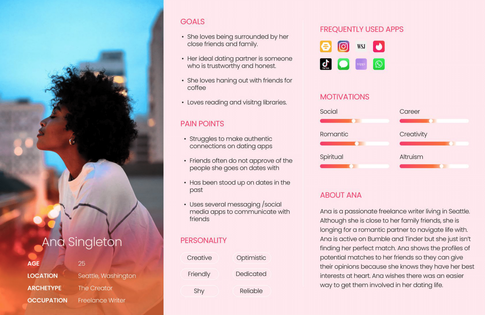

"Wingmates" Mobile App Case Study
Research Background
The premise for this project was simple. Our group was tasked with identifying a problem and creating a mobile app to address and solve said problem.
Our group knew we wanted our project to be entertaining, fun, and enjoyable to work on over the three weeks we were given. And what's more entertaining,
fun, and enjoyable than dating in the 21st century?
Our group decided to create a mobile dating app that puts a twist on the tried and true dating app model by including third-parties in the
matchmaking process.
Team
User Research, Design Thinking, Problem Definition, Ideation, Prototyping
Alexis Ang, Emily Leibowitz, Lara Martinez, Soubam Priyananda
Tools
Miro, Google Slides, Figma
Duration
09 / 22 / 22 – 10 / 12 / 22
approx. 3 weeks
Proto Persona
With the basic premise of the app in mind, our group determined the basic qualities of a person who might be interested in using a dating app that allows a user to involve other people in their match-seeking journey. This resulted in our first iteration of a persona: "Ana."

Research & Interviews
As user researchers, we identified three objectives we wanted to explore:
- A user's opinions and expectations of blind dates
- How users interact with and behave towards existing dating apps
- The role of a user's friends / close ones in their dating lives
We interviewed six individuals one-on-one with discussions led by the following interview questions.
- Describe your relationship status.
- Who are the closest people in your life?
- How would you describe the relationship with your friends / closest people in your life?
- Describe the role, if any, that friends / closest people in your life play in your dating life.
- How often do you inform your friends / closest people about your dating life?
- What modes of communication / apps do you use to communicate with your friends/closest people?
- How do your preferences in romantic partners differ from the preferences of those closest to you?
- What apps, if any, do you use to find dates?
- What features in dating apps do you like the most?
- What features in dating apps do you think could be improved upon?
- Walk me through what an ideal scenario when using a dating app looks like to you?
- How do you get your friends' input / opinions for matches?
- What information do you hope to get out of sharing matches with your friends?
- What are your expectations when going on a date?
- How do you feel about blind dates?
- What are your expectations when going on a blind date?
- If your friends / closest people were to set you up with someone, how do you think that arrangement would go?
- What kind of person would you expect your friends / closest people to set you up with?
- What concerns or restraints do you have when it comes to using dating apps?
- Overall, how do you feel about the concept for this app?
Interview Findings
At the time of the interviews, three of the interview respondents were single while the other three respondents were in a relationship. All six respondents
had experience with dating apps and maintained close, personal relationships with their friends and family. Tinder was the most popular existing dating app that
our respondents used or had experience with, followed closely behind by Hinge and Bumble.
We took the interview responses and organized the statements into an affinity diagram and an empathy map. We then fully fleshed out our user
persona and aptly named her "Ana Singleton." With a more well-defined persona, we created our user insight statement and a problem statement that would
better guide us in our app creation.
Affinity Diagram and Empathy Map
Final User Persona

User Insight Statement
Young adults who are looking for romantic partners need their friends' support and encouragement because they feel more confident dating someone who has been reviewed and approved by their peers.
Problem Statement
We have observed that many young adults looking for a date share screenshots of their potential dates' profiles to their close friends so they can get their opinion and validation. How might we help young, single adults who need validation on their dates gain more confidence and have more a exciting and safe dating experience?
Next, we organized the information we gathered from our interviewees into formats that would be more useful for us in our app creation. We took common comments from the affinity diagram and organized them into "I like...", "I wish...", and "What if..." statements. We viewed these statements as potential features that could be included in a dating app and to narrow the features down, we dot-voted on features that we wanted to expand upon. The features that had votes were then placed in a feature categorization matrix. A profile preferences feature and a profile verification feature were two features that seemed to be the most popular. All of this information was further condensed and organized into a value proposition canvas that would allow us to ensure our app would be focused on our users' needs.
To help us visualize our users' needs in a more concrete manner, we took our user persona, Ana Singleton, and created a storyboard and user journey map that placed her in situations where she would be using our app.
Competitors
Of course, we are not pioneers to the genre of dating apps, so we made sure to carefully analyze existing dating apps on the market. We noted the apps' features as well as their strengths and weaknesses. By analyzing these features, we could more easily identify what was standard across all the apps and what we wanted to include in our own app. In our search for competitors, we found the existing app, "Wingman," that had a premise almost identical to our own. This similarity did not deter us from continuing to design our app; rather, we felt more encouraged that our idea was something users would be interested in seeing and using. Additionally, we were able to see what aspects Wingman was lacking in and ensure we avoided similar issues in our own design.
User Flow
Prototyping is my favorite part of the design process. Finally getting this app put together began with creating a user flow. However, we quickly realized that due to the premise of our app (which we decided to name "Wingmates"), we had two user flows that could be explored. First, there was the user looking to date. Then, there was the user looking to find dates for their friends: the "wingmate." The user flow reflects that much of the functionality of the app would be the same for the two different types of users, though the motivations of the users would be much different, and as such, the app would require different features for the user to accomplish his or her respective goals. Due to the time constraints of this project, our group decided that we only had the bandwidth to explore one of these user flow. Our user persona, Ana Singleton, more closely aligned with the first type of user flow and we fleshed out the user flow and the features of the app with her motivations in mind.